Revision 1.0, 07/30/2003
Questions & Comments : Please mail Prabhat Hegde
Testing Considerations For Mozilla Indic Script Support
- Indic Script Input
- Inscript Keyboard Layout for Indic Languages
- Phonetic IME (Solaris specific)
- Indic Script Text -Edit Operations
- Testing Edit Operations
- Hindi Edit Operations
- Kannada
- Telugu
- Tamil
- Test URLs
- Hindi
- Kannada
- Telugu
- Tamil
- Gujarati
- Bengali
- Malayalam
- Oriya
- Indic Font Issues
- Hindi Test Cases
- Hindi Testing reports
- References
Introduction
This document outlines key Indic
language features which will be useful to test Indic (Currently Hindi)
featureset in the browser. The features covered are:
- Input
- Output (Display & and Printing)
- Hindi script shaping issues
- Edit Operations.
Complex Text Support (CTL)
The presentation of Indian Language
scripts requires contextual processing for display and editing. This
output technology is called Complex Text Layout (CTL). CTL features
enables the providers (such as OS/X-Windows/CDE-Motif, Gnome/Gtk/Pango
based applications, or Cross-platform applications such as Mozilla or
Star/OpenOffice) to support writing systems that require a complex set
of transformations between logical (as in stored-text) and
physical/Visual (as in display or printed) text-data representations.
Additionally, CTL support also defines the behaviour of character
combinations and shaping, Text edit operations and if needed, Component
orientation.
Indic Support Mozilla (*nix only)
Mozilla's supports the following
features w.r.t Indic scripts:
- Context Sensitive Shaping and Rendering on Unix platforms using non-intelligent (non-OT) fonts encoded in "sun.unicode.india-0" encoding.
- CTLized Edit operations including Cursor positioning, Insertion, Deletion, Backspacing and Selection.
- Printing through XPrint.
- Features 1-3 above are available for Core-X and XFT2 backends.
- Edit operations in the Mozilla Viewer, Composer and Mail are all covered.
- Mail transfer is via UTF-8.
- Currently no ISCII support in view of lack of content (as in
web-sites that i know of), and lack of registry for ISCII in IANA.
Currently Hindi is the only fully
supported script.
For complete details about Indic Support project, visit www.mozilla.org/projects/ctl.
For complete details about Indic Support project, visit www.mozilla.org/projects/ctl.
About Indic Scripts
All Indic Scripts are derived from
the ancient Brahmi script. Describing them is out-of-scope here. You may
find more information at one or more of the following:
The Devanagari Alphabet
The Devanagari alphabet is used for a number of Indian languages and
dialects and closely related to a number of scripts used today in South
Asia, Southeast Asia and Tibet. It is used for Sanskrit, Hindi, Marathi
and Nepali. The alphabet can be divided into:
| Consonants | 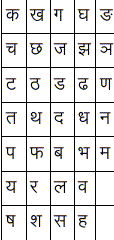 |
| Vowels and corresponding Matras | 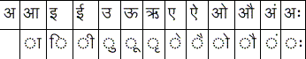 |
| Signs |
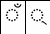 |
| Numerals | 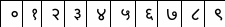 |
Indic Script Input
Inscript
Keyboard Layout
INSCRIPT Keyboard Layouts are the de-facto standard for Indic
Compose/Keyboard Overlay based input. They are as under:
http://java.sun.com/products/jfc/tsc/articles/InputMethod/indiclayout.html
Phonetic
Input Methods (On Solaris10
and Mad-Hatter only)
Indic Script Edit Operations
This section describes the expected behaviour of Edit operations for Indic Scripts. The most important consideration is that edit operations need to preserve cluster boundaries. Where 'cluster' refers to a unit of display which may be composed of multiple characters in the alphabet. Edit Operation behaviour is common across all Indic scripts.Indian
Languages have their own semantics in dealing with text editing. Some
text processing features which need to adapt to the new semantics are:
- Left and Right arrow should traverse the entire display unit .
- Caret /Cursor placement should not be in the middle of a display unit but should snap to the nearest edge.
- <Delete>/Del key deletes the entire cluster.
- <BKSP>/Backspace composes the cluster by character.
- Character breaking is by a cluster or alternatively a display unit.
- Line breaking is by danda ' '.
- Word breaking is by space.
- Mouse clicks need to snap to the nearest cluster boundary.
- Selection/Cut/Copy/Paste should follow the rules mentioned above
Edit Operation Testing
As described above the following
opertions must be tested:
- Left & Right Arrow Keys
- Left & Right Arrow Keys with <Shift>
- Left & Right Arrow Keys with <Ctrl>
- Mouse Operations
- Insertion
- Replacement
| Id |
Operation |
Initial | Expected
Result |
| 1 |
Right Arrow 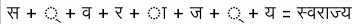 |
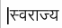 |
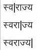 |
| 2 |
Right Arrow |
||
| 3 |
<CTRL>Right Arrow 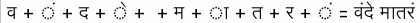 |
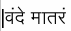 |
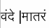 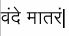 |
| 4 |
<Shift> Right Arrow |
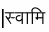 |
|
| 5 |
Left Arrow 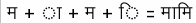 |
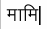 |
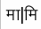 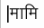 |
| 6 |
Left Arrow |
||
| 7 |
<CTRL>Left Arrow |
||
| 8 |
<Shift>Left Arrow |
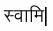 |
|
| 9 |
Mouse SnapTo |
||
| 10 |
Mouse Double-Click/Select Word |
||
| 11 |
Mouse Right Cut/Paste |
||
| 12 |
Mouse Left Cut/Paste |
||
| 13 |
<Shift> <CTRL> Left Cut/Paste |
||
| 14 |
<Shift> <CTRL> Right Cut/Paste |
||
| 15 |
Select clusters in a word -
Select/Cut/Paste |
||
| 16 |
Straddle Script boundary -
Select/Cut/Paste |
||
| 17 |
|||
| 18 |
Backspace - Delete a character (Start from end of the word) |
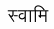 |
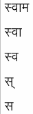 |
| 19 |
Backspace |
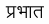 | |
| 20 |
Backspace |
||
| 21 |
Delete (Start from beginning of
the word) |
 |
|
| 22 |
Delete (Start from beginning of the word) | 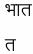 |
|
| 23 |
Copy/Paste Repeat 11-16 above but use Copy instead of Cut |
||
| 24 |
Replace |
||
| 25 |
Insertion (Add a Halant at the
location shown by the cursor) 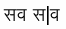 |
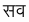 |
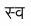 |
| 26 |
|||
| 27 |
Same tests should be extended to multiline text.
Devanagari Character Shaping
Shaping is the process by which
characters are rendered in the appropriate presentation forms. Some but
not exhaustive set of rules to cover Devanagari Character Shaping is as
below:
| Id |
Description/Rule | Input =
Expected Output |
Conjunct
formation
|
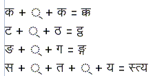 |
|
Consonant
combining with Matra
|
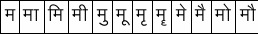 |
|
| Re-Ordering Note the re-ordering of the choti-I matra. |
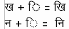 |
|
| Shaping Samples of context sensitive shaping when consonants are joined together. |
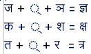 |
|
| Half Forms Half-forms are valid for all consonants except for र, फ and ढ Half forms of some alphabets such as ट & ठ are rendered one below the other. |
||
| Ra Case
(The first cluster is a case of ra) |
||
| Reph Case 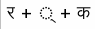 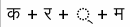 |
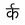 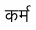 |
|
Indic Font Issues
Indic Scripts currently lack key
presentation standards such as a standardised Font encoding or a
standardized glyphset as has been the case for other Complex Text
Scripts such as Arabic (Arabic Presentation Forms A & B) or Thai
(NEC TEC, TIS620. This results in considerable difficulty to the
developer. Emergence of OpenType alleviates this problem. However, Indic
OT fonts are not yet in wide-spread use (moreso for non-desktop
processing applications) and hence a two-part solution is required: In
the first phase a free font-encoding that supports all indic scripts
will be supported and in the next phase OpenType support. A single
"dumb" fontencoding 'sun.unicode.india-0" was chosen since it the only
encoding that supports 8 Indian languages. This will reduce the need to
support multiple non-standard encodings, a no-no for most global-ready
applications such as Mozilla are standards based (Unicode for
data-processing & standardised encodings for presentation) .
The following are some known Indic font encodings:
The following are some known Indic font encodings:
Linux & Solaris
Windows